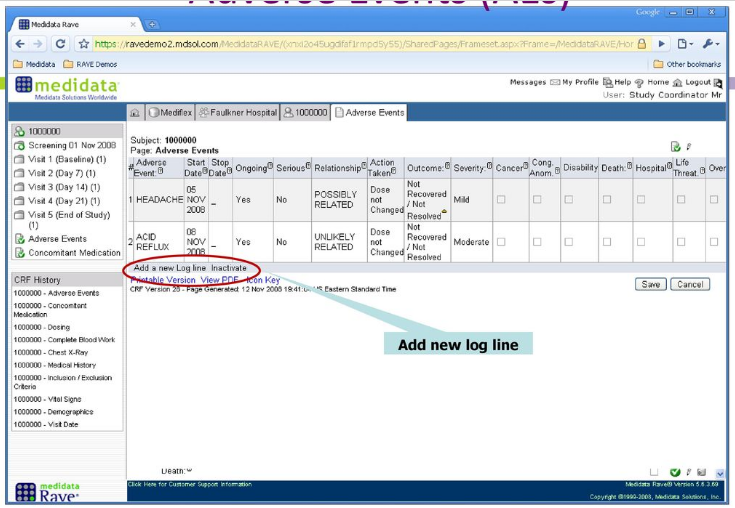
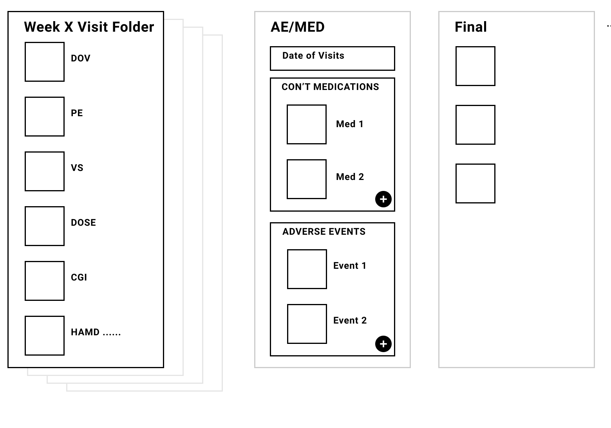

Repeating Concepts/Forms
CDISC
CDISC Summary
- The eCRF Portal consists of a range of eCRFs
- Each Adverse Event instance is a eCRF
- Each Medication instance or group of is a eCRF
CDISC AD
CDISC Medication

UX Takeaway
- Reading a Med (for example) as a row on a table is a good fit as each entry repeats from the one before and there is little benefit repeating the labels
- Inline editing is a poor experience as the rows are too wide
- It makes sense to have the edit 'form' display from top to bottom, and as we might want to switch from creating a Visit/Encounter Mode to creating a Medication Mode to also place the form in a Modal
- This would work for creating a Medication from the Medication log table as well as within an Encounter. We know this table and button pair pattern
- This should be properly modular though - the Medication should be created as soon as the Save button is clicked. What if the associated parent encounter has not yet been Saved?
MEDIDATA

MEDIDATA Summary
- Visits are folders with a bundle of eCRFs, some Visits have alot of required eCRFs (Day 0), others very few
- Some of the required eCRFs contain Yes/No questions about Adverse Events, Medications, Pre-exisitng Conditions (a form of progressive disclosure which supports modular eCRFs)
- When triggered by a Yes - Adverse events and Medication eCRFs sit in their own ‘Pages’ (log forms) to group them
- Each new AE or MED eCRF can be added by clicking the button in the log form to add a new line - this displays a form and when saved adds a new row to log table
- MED eCRFs can be linked to AEs
MEDIDATA Summary
- *Pre-existing Conditions seems to be located in the first Day 0 Visit
- *Interim Visits (themselves eCRFs) allow you to define which other eCRFs to fill in including AEs - linkage method isn't obvious - ie does it visually appear twice in UI
MEDIDATA
MEDIDATA
MEDIDATA
MEDIDATA
MEDIDATA
MEDIDATA - Linking
MEDIDATA
UX Takeaway
- Having to Save the log table view seems strange - why doesn't the Save occur on the individual eCRF?
ORACLE
Distinctions
- Regular form—contains data that is specific to the visit in which the form occurs.
- Common form—contains data that is cumulative from visit to visit. Each time the form occurs in a visit, it displays the data accumulated from all previous - Concomitant Medication & Adverse Experience forms.
ORACLE Summary
- Visits (Wk 1, Wk2 ...) are bundles of 'Regular' eCRFs
- Adverse events and Medications 'Common' eCRFs sit in their own group (unscheduled) along with Dates of Visits presumably for dates only related to these eCRFs
- Meds and Events have their own ‘page’ view so you can see a full set of the Meds or Events on their own
- You can add a new repeating eCRF by clicking on ‘New’ button
- There are 3 views - Summary, Detail and Cross reference
- Associations can be made between repeating eCRFs. This is facilitated using the detail view where you can see Meds in the Adverse Event view and click any that you want to associate
ORACLE - Regular
ORACLE - Common
ORACLE - Common
ORACLE - Common
ORACLE - Common - Associations
Shauns screenshots
Shauns screenshots
"To ‘activate’ a common form, for example adverse event, the form first asks ‘are there any serious or adverse events of interest to report?’ with yes and no radio buttons. When Yes is selected and saved the data point table appears"
I interpret this as a eCRF gatekeeping the additional eCRFs that are of a "Common" type. This has only one field - Yes or No. Our Sections don't do this as there is no field to state no. I assume the term Common is from Oracle or elsewhere. Also in the slideplayer examples the Yes/No were not on the same 'page' as the log items. Are these Visit or Subject log lists?
"A log form is used when multiple instances of the same form are needed; for example, concomitant medications or adverse events. The log form adds additional records or entries, as needed, to a single form. Each entry is a log line."
Here he switches to calling it a log form - note how this needs a Save on the log parent form not the child - this also lacks modularity you get on the Oracle system. It contains a Submit that can act on the association
To add additional log lines, the user clicks on ‘Add a new Log Line’. Instead of deleting log lines, the user can only inactivate the log line. When clicking inactivate, a drop down list of log numbers appears, with the user clicking the appropriate log number. Users can also reactivate inactivated log lines.
Shauns screenshots
Shauns screenshots
CasterEDC
CasterEDC Summary
- There is a distinction between Study and Report
- A Report is what is considered a Repeating or Common form in the other systems or an Unscheduled Visit
- A Study contains Phases and Steps
- Phases include - Informed Consent, Baseline, Follow Up Visits (scheduled)
- Steps include - Physical Exam, Laboratory, Medication Yes/No
- While not ‘Steps’, Reports can sit in the same level of the side ‘menu’ and also appear in a All Reports table
- Medications can be seen in the Medication Yes/No as a table of Medications associated with that Phase
- Reports can also be attached to other Reports
CasterEDC
CasterEDC
CasterEDC
Summary of other systems
- The repeatable forms (instances of AEs and Medications) are modular, hence they can have their workflows
- They sit outside of the Visit eCRFs but can have an association with other eCRFs and can have a visual representation to them
- They can have a association with each other
- These shoud be creatable as log rows to a table but probably not as editable inline row
- There are other repeatable data items that could sit inside the main eCRFs but not be eCRFs themselves. Again these could be created as rows to a table but as these are part of a bigger form these might be as created as modes (the break from the main task)
- The decision to create long forms is a major stumbling block to both make the Adverse Events and Medications modular and create a Clinical workflow
Summary
- Reporting? What are the use cases whereby its beneficial to see relationships between 'Common' forms?
A-Star Summary
Its not an eCRD SO;
- Its workflow is tied to the Parent form
- As it belongs to a bigger form it is difficult to model cause and affect relationships between it and other 'Common forms'
- Its clunky you must 1. click the anchor nav, 2. click Register adverse event, 3. fill in the Adverse Event fields and 4. Save a Valid Parent to create an Adverse Event. Then it still needs to be reported
A-Star Summary
- It works pretty well notwithstanding the lack of modularity due to it existing as part of the Encounter form
A-Star
A-Star
A-Star
A-Star
Benefits
- Any Clinical workflow has to work around a more flexible set of smaller form - Alopecia, Target 5000